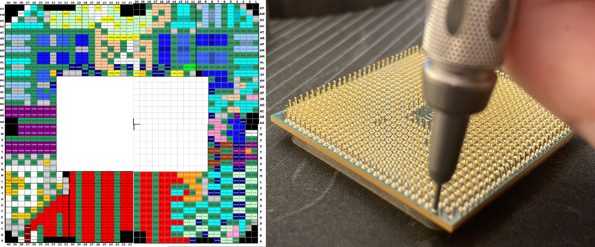

Моите вештини
Како компјутерски техничар, поседувам одлични компјутерски вештини од софтверска и хардверска страна. Со долгото време и мојот личен интерес кон периферијата исто така стекнав огромна брзина при извршување на моите задачи.
Имам стекнато претходно искуство од работа преку пракса за како да се работи во тим, од таму стекнав солидно знаење за тимска работа, ефективна комуникација и отварање на ум за да се научат нови нешта. Исто така стекнав дополнително знаење за лемење и како да се дијагнозираат поретки проблеми, како проверка на LGA 1051 pinout datasheet за да се дијагнозира дефективен RAM слот.
При спремање за натпревари за Adobe и Microsoft Office, стекнав солидно познавање со принудените алатки од Adobe како Illustrator, Photoshop и Microsoft алатки како Word, Excel, Powerpoint.